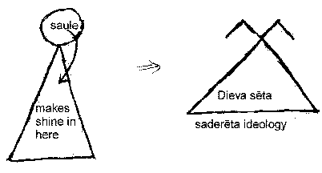
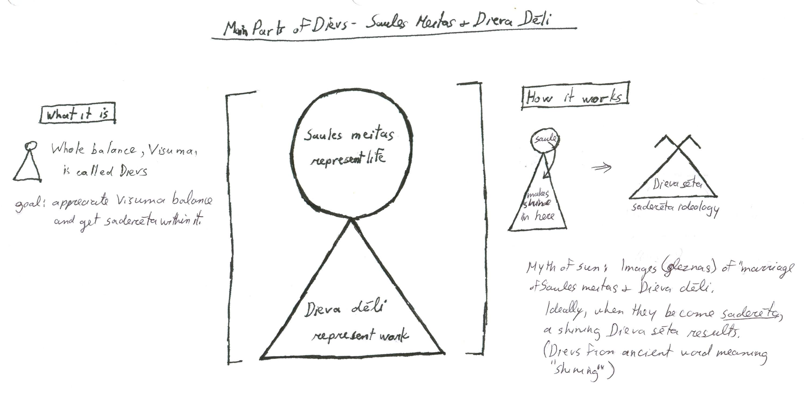

|
Story-myth of the Sun (Saules Teiksma)
About the Story
I call this a "teiksma" because the psychological profiles and interactions describe natural laws. It is also a myth because of use of personifications to help explain natural laws. Other ancient cultures have this myth as well, but it is fragmented. The Latvian version is complete and rich.
This story describes a celestial wedding. Sparkling entities (spīdekļi) are the stars, including the sun. They are personified, and their movement and interaction in the sky resembles the struggles and balances in nature. Among the stars in the sky, the Sun's daughters (Saules meitas) are to marry God's sons (Dieva deli). This is not a legal marriage, but called "saderēšana" (fitting together); an attempt to work together.
In the diagram, the sun (saule) is represented by ancient graphic, a circle. God (dievs) as the infrastructure of the universe, is represented by ancient graphic, a triangle. The universe exists, but for something to become alive in the universe, it needs light (gaisma) which is sun (saule). When the sun and dievs are able to fit together (saderēta), a shining "god's fence" (dieva seta) results. It is represented by the ancient graphic symbol of a triangle with top lines extending, to form the roof. A house, has entities living in it. So god's fence (dieva seta) is thought of as a huge house with all kinds of entities living in it.

Practically speaking, the "myth of the sun" as its known by most, should be called the "fitting together of god" (dieva saderēšana). Images of the "marriage" of Sun's daughters (Saules meitas) and God's sons (Dieva dēli) explain our motive to grow. To grow, life essence (saule) has to be supported by an appropriate environment to grow (dieva dēli) which are described as workers of land and other natural phenomenon. See diagram.
The ancient graphic symbol of the fitting together (saderēšana) or marriage of Sun's daughters and god's sons is a small circle, over a larger triangle. The circle is small, because just like a candle light, it can be magnified quickly to many candles, to give light to all. It is very small and very powerful. However, if is is extinguished, all life is lost forever.
It is also important to remember that this circle over triangle graphic of dievs as a living entity, is in fact, also a symbol of each person and entity under gods fence (dieva seta). There is no distinction between humans and gods, as we all area piece of dievs, structured the same as dievs. Latvians would not say "what an angel" or "he was touched by god", as we are already a part of the whole.

Story Summary
Saule (Sun) as a maiden and Mēness (Moon) as suitor. They court, and Saule becomes a wife with Mēness. Saule and Mēness had many offspring, the stars. The marriage is not harmonious. When Mēness misbehaves, Saule scolds him using silver stump, silver pebble or anything that sparkles as part of nature, thereby representing Visuma (the whole). Symbolically, Saule believes Mēness is not in balance with Visuma. When Mēness is adulterous (no incest implied), Saule uses a sharp sword. Symbolically using a sword, she hurts him with something he made himself.
The dainas describe the daily life of Saules Meitas (daughters of sun). What they wear and do. They are often joined by Dieva Deli (sons of god).
In springtime, Dieva dēli look for future brides - Saules meitas. The suitors of Saules meitas can by any Dieva dēli like Auseklis (morning star), Pērkons (thunder), Ūsiņš, Mēness (moon) or human lad. A marriage agreement is made with relatives from both parties present. The wedding is in the fall and is very extravagant and detailed. The relatives of Dieva deli sing songs of joy, while relatives of Saules meitas, sing songs of sorrow and loss.
After the wedding, Saule is sorrowful. This coincides with nature's shortened days and overcast skies. Saule is sad because she misses daughter, regrets loss of dowry, but most important, she fears Saules meita is in extreme danger, either drowned or dead. Saule sheds tears which are red berries, found in far away places, like across the river, other side of the mountain, or middle of the sea. (Red represents biological fertility). Saule sheds tears at losses. Loss of golden apple (representing spirit of life), silver boat or damaged carriage (representing spirit of constructive work). She cries when a green leaf is torn off a tree from the wind (representing difficulties growing within natures balance) and silk sheets drenched by the rain (representing hard work that goes for not).
SSS2010 Home |